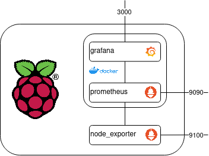

Monitor a Raspberry Pi with Grafana + Prometheus
This article demonstrates how to monitor and visualize metrics of a Raspberry Pi using Prometheus and Grafana. The goal is to have a reusable configuration that can be easily tracked with version control systems and rolled out to other instances.Prerequisites
We need to make sure, that we have the following things working before we can continue:- Running Pi with Raspbian or similar OS installed
- Connection via SSH or connected to a monitor
- Pi is connected via wifi or ethernet to the internet
What We Will Build
We want to visualize and monitor metrics of a Raspberry Pi using Prometheus and Grafana. These metrics can help us to observe the health of the system and alert us if certain limits are reached. We will be using the following tools:- Prometheus
- Node Exporter for Prometheus
- Grafana
- Docker
- Docker Compose
The following image gives an overview of what we are going to build.
 As shown in the image, prometheus and grafana will run as docker containers on the Raspberry Pi. The node_exporter is running directly on the Raspberry Pi to collect and publish system metrics.Setting Up Grafana
Let's start by setting up Grafana using docker and docker-compose. Connect to your Raspberry Pi using SSH or connect it via your monitor. Create a folder in the home directory called pi-metrics and navigate into it.
$ mkdir pi-metrics && cd pi-metrics
Create a file named docker-compose.yml and open with an editor of your choice.
$ touch docker-compose.yml
Then, let's add the following to the docker-compose.yml:
version: "3.9"
services:
grafana:
image: grafana/grafana:latest
container_name: grafana
restart: always
ports:
- "3000:3000"
volumes:
- "grafana-storage:/var/lib/grafana"
volumes:
grafana-storage:
This will tell docker to use the latest image version of grafana, publish port 3000 and create a volume
called grafana-storage which is mapped to the container under /var/lib/grafana.
We additionally tell docker to always restart the container in case of failures or other reasons.Now let's check if everything is working by running the following command:
$ docker-compose up -d
We should be able to access the Grafana frontend by opening the following url in a browser http://ip-of-pi:3000.
The first time we open the url, we need to update the password.
Setting Up Prometheus
The next thing we need to do is configuring Prometheus, which will also run inside a docker container. Before we adapt the docker-compose.yml, we need to create an empty file called prometheus.yml. We will leave this file empty first but we need to modify it during our next step. Let's modify our existing docker-compose.yml, that it looks like this:
version: "3.9"
services:
prometheus:
image: prom/prometheus:latest
container_name: prometheus
restart: always
ports:
- "9090:9090"
volumes:
- "/home/pi/pi-metrics/prometheus.yml:/etc/prometheus/prometheus.yml"
grafana:
image: grafana/grafana:latest
container_name: grafana
restart: always
ports:
- "3000:3000"
depends_on:
- prometheus
volumes:
- "grafana-storage:/var/lib/grafana"
volumes:
grafana-storage:
We added one service called prometheus that is using the latest image and publishes on port 9090.
We also added a new entry to the grafana service that tells docker that the grafana service depends on the prometheus service.
Next we need to update our deployment by executing the following command again:
$ docker-compose up -d
We should be able to open the following url in a browser http://ip-of-pi:9090.
It will show the frontend of prometheus where we can later execute queries.